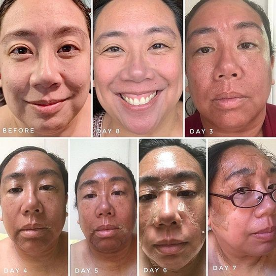

About the system
The formulation is based on resorcinol compounded in a non-penetrating base. Dead skin layers are exfoliated in a controlled way and replaced with skin that feels more supple, elastic and firm. The current site describes it as safe for global skin types and colors.
Unlike more aggressive peels, this technique is intended to detach only dead cell layers. Two or three treatments may be recommended depending on the condition of the skin, and two treatments spaced six weeks apart may produce a stronger result.
During treatment
Application takes approximately two hours, with 2.5 hours allotted each day for application and removal. A mild stinging sensation may occur and is minimized with a small fan.
Expected peeling timeline
- Days 1–2: mild redness and increasing tightness.
- Day 3: skin may take on a brownish tinge.
- Day 4: skin can resemble a strong sunburn as pigment comes to the surface.
- Days 4–5: significant peeling typically begins.
- Days 7–10: remaining skin is removed at a peel-off appointment; exact timing varies.
Skin around the eyes, hairline and neck may take additional days. Daily photos are used to help determine the peel-off appointment.
After peel-off
Peel-off day begins a longer corrective process. With proper home care, the current site states that improvements may continue for up to nine months. A second peel may be performed six to eight weeks after the first application.
The peel can also be used on selected areas such as the back, chest, hands and arms.